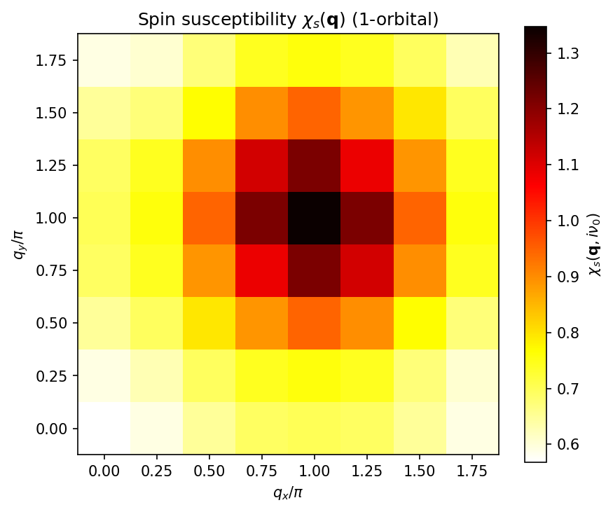
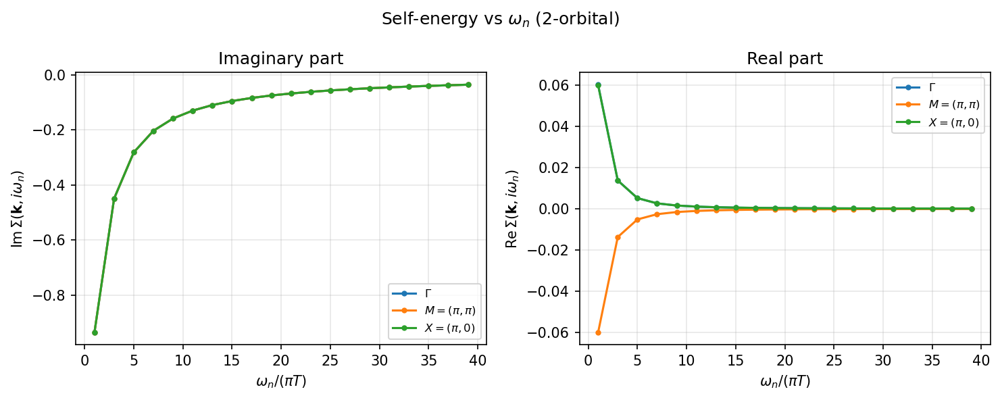
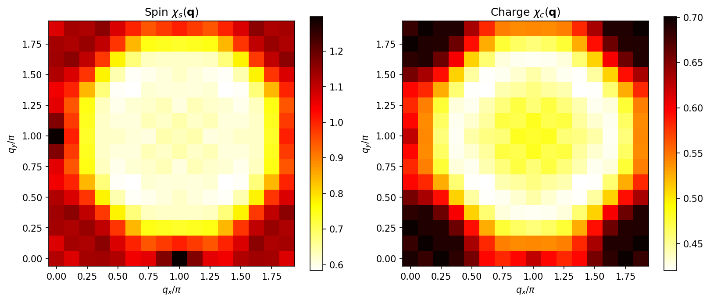
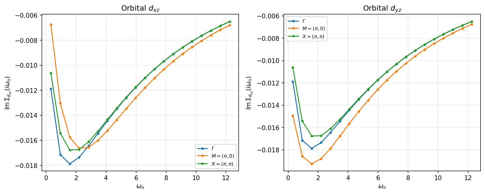

6.1. チュートリアル: FLEXソルバー¶
本チュートリアルでは、H-waveのFLEX (Fluctuation Exchange Approximation; ゆらぎ交換近似) ソルバーの使い方を 説明します。FLEXはRPAを拡張し、裸のグリーン関数の代わりに ドレスド（自己無撞着な）グリーン関数を用いることで、 相関電子系のより正確な記述を提供します。
サンプルファイルは docs/ja/source/flex/sample ディレクトリにあります。
6.1.1. 概要¶
FLEX近似 [1] は遍歴電子系のための自己無撞着ダイアグラム法です。 裸のグリーン関数 \(G_0\) を用いるRPAと異なり、 FLEXは以下の自己無撞着ループを収束まで繰り返します:
Dyson方程式からドレスドグリーン関数 \(G(\mathbf{k}, i\omega_n)\) を計算
ドレスド \(G\) から裸感受率 \(\chi_0(\mathbf{q}, i\nu_m)\) を計算
相互作用をスピンチャネルと電荷チャネルに分解
スピン/電荷感受率 \(\chi_s\), \(\chi_c\) のRPA方程式を解く
有効相互作用 \(V_{\mathrm{eff}}\) を構成
FFT畳み込みにより自己エネルギー \(\Sigma(\mathbf{k}, i\omega_n)\) を計算
収束判定; 未収束なら1に戻る
注釈
電子数を filling / Ncond で固定する場合（mu を固定しない場合）、FLEX
は各SCF反復で化学ポテンシャル \(\mu\) を*ドレスされた*Green関数から解き直し、
自己エネルギーが成長しても目標フィリングが自己無撞着に保たれるようにします。この
ため各反復で FLEX._find_mu_dressed: mu = ... の行が出力され、収束した
\(\mu`（および正確な反復回数）は :math:\)mu` を非相互作用値に固定した計算とは
異なります。本チュートリアルに示す反復回数・収束値はすべて例示であり、バージョンや
環境によって多少変わり得ます。
6.1.2. 理論¶
ドレスドグリーン関数¶
ドレスドグリーン関数はDyson方程式から得られます:
ここで \(G_0^{-1}(\mathbf{k}, i\omega_n) = i\omega_n + \mu - H_0(\mathbf{k})\) は裸のグリーン関数の逆です。
スピン・電荷感受率¶
裸感受率はドレスドグリーン関数から計算されます:
スピン感受率と電荷感受率は:
ここで \(U_s\), \(U_c\) は全相互作用ハミルトニアンから 分解されたスピンおよび電荷相互作用頂点です。 単一バンドHubbardモデルでは \(U_s = U_c = U\) となります。
有効相互作用¶
FLEX有効相互作用はスピンゆらぎと電荷ゆらぎを結合します [1]:
ここで \(W\) は裸の相互作用頂点です。 \(\chi_0\) は 1回だけ 減算します。最低次では \(\chi_s = \chi_c = \chi_0\) となるため括弧内は \(\chi_0\) に帰着し、\(V_{\mathrm{eff}} = W \chi_0 W\) （2次の \(U^2\) バブル）を与えます。この1回の減算により、\(\chi_s\) と \(\chi_c\) に含まれる二重計上された2次ダイアグラムが除去されます。
自己エネルギー¶
自己エネルギーは実空間・虚時間での畳み込みにより計算されます:
この要素ごとの（Hadamard）積はFFTを用いて効率的に評価されます。
近似の適用範囲¶
FLEXは保存近似（Baym--Kadanoff近似）であり、自己エネルギーに対してRPA的な 粒子--空孔バブルおよびラダー級数を足し上げます。一方で、電子が三角形の フェルミオンループを介して 2本 のゆらぎ伝播子に結合する Aslamazov--Larkin (AL) 型および Maki--Thompson (MT) 型の頂点補正 （モード間結合）は 含みません。これらの高次補正はFLEXの枠組みの外であり、 ここでは評価されません。2つのスピンゆらぎから生成される電荷・軌道ゆらぎが 重要となる場合（例：Onari--Kontaniの軌道ゆらぎ機構 [2]）には効くことがあります。
またデフォルトの calc_scheme = "reduced" および "squashed" スキームでは、
スピン/電荷バーテックスを相互作用の密度--密度成分で構成します。
off-diagonal（スピンフリップのHund結合、ペアホッピング）の頂点は
密度--密度成分に縮約されます（Exchange/PairHop を与えると警告が出ます）。
したがってこれらのスキームでの「FLEX」は 厳密ではなく、密度--密度かつ
AL/MTを含まないゆらぎ交換近似のレベルである点に注意してください。
一方、 calc_scheme = "general" スキームでは、off-diagonalな完全な
Kanamori頂点を 保持 します。これはMochizuki--Yanase--Ogata (MYO) [3]
（およびTakimoto--Hotta--Ueda (THU) [4] により裏付けられた）に従う
常磁性の完全頂点（full-vertex）の定式化です。MYO規約のもとで
行列形式のスピン相互作用行列 \(\hat{U}^s\) と
電荷相互作用行列 \(\hat{U}^c\) を構成し、行列形式のRPA方程式を解いて
\(\chi_s\)/\(\chi_c\) を求め、ゆらぎ相互作用を
\(V = \tfrac{3}{2}\hat{U}^s\chi_s\hat{U}^s
+ \tfrac{1}{2}\hat{U}^c\chi_c\hat{U}^c
- \tfrac{1}{4}(\hat{U}^s+\hat{U}^c)\chi_0(\hat{U}^s+\hat{U}^c)\)
として組み立てます。したがって "general" ではoff-diagonalの頂点は
無視されず、密度--密度縮約の警告も抑制されます。なお上記のAL/MT型の
頂点補正は、"general" スキームにおいてもFLEXの枠組みの外にあります。
6.1.3. サンプル 1: 1軌道Hubbardモデル¶
モデル¶
最初のサンプルは、二次元正方格子上のハーフフィリング (\(n = 1\)) における 1軌道Hubbardモデル です。
最近接ホッピング \(t = 1.0\)、 次近接ホッピング \(t' = 0.5\)、 オンサイトクーロン斥力 \(U = 4.0\)、 温度 \(T = 0.5\) を使用します。
このモデルは \(\mathbf{Q} = (\pi, \pi)\) にピークを持つ 強い反強磁性 (AF) スピンゆらぎを示すことが知られています。
入力ファイルの準備¶
サンプルファイルは docs/ja/source/flex/sample/1orb/ にあります。
パラメータファイル (input.toml):
[log]
print_level = 1
[mode]
mode = "FLEX"
[mode.param]
T = 0.5
CellShape = [8, 8, 1]
SubShape = [1, 1, 1]
Nmat = 64
filling = 0.5
IterationMax = 100
Mix = 0.2
EPS = 6
[file]
[file.input]
path_to_input = "."
[file.input.interaction]
path_to_input = "."
Geometry = "geom.dat"
Transfer = "transfer.dat"
CoulombIntra = "coulombintra.dat"
[file.output]
path_to_output = "output"
chi0q = "chi0q"
chiq = "chiq"
sigma = "sigma"
green = "green"
energy = "energy.dat"
主要パラメータ:
mode = "FLEX": FLEXソルバーを選択T = 0.5: 温度CellShape = [8, 8, 1]: 2D系の 8 x 8 k点メッシュNmat = 64: 松原周波数の数filling = 0.5: 1サイトあたりの目標電子数（ハーフフィリング）。filling（またはNcond）を指定すると、FLEX は各SCF反復でドレスドGreen関数から化学 ポテンシャル \(\mu\) を解き直し、自己エネルギーが成長してもフィリングを保存 します。代わりにmuを指定した場合は固定されます。coeff_tail = 1.0``（省略可）: 松原和の高振動数テール加速係数。``coeff_tail = 1は \(G\) の厳密な \(1/(i\omega_n)\) 係数（ユニタリ性）に一致するため、 結果を歪めずにNmatに対する収束を加速します。RPAソルバーでもサポートされて います。IterationMax = 100: SCF反復の最大回数Mix = 0.2: 自己エネルギー更新の混合パラメータ (\(\Sigma_{\mathrm{new}} = (1 - \alpha)\Sigma_{\mathrm{old}} + \alpha\Sigma_{\mathrm{calc}}\))EPS = 6: 収束判定基準 \(10^{-6}\)
格子情報 (geom.dat):
1.000000000000 0.000000000000 0.000000000000
0.000000000000 1.000000000000 0.000000000000
0.000000000000 0.000000000000 1.000000000000
1
0.000000000000000e+00 0.000000000000000e+00 0.000000000000000e+00
原点に1つの軌道。
トランスファー積分 (transfer.dat):
Transfer in wannier90-like format for uhfk
1
9
1 1 1 1 1 1 1 1 1
-1 -1 0 1 1 0.500000000000 -0.000000000000
-1 0 0 1 1 1.000000000000 -0.000000000000
0 -1 0 1 1 1.000000000000 -0.000000000000
0 1 0 1 1 1.000000000000 0.000000000000
1 0 0 1 1 1.000000000000 0.000000000000
1 1 0 1 1 0.500000000000 0.000000000000
正方格子上の最近接 (\(t = 1.0\)) および次近接 (\(t' = 0.5\)) ホッピング。
オンサイト相互作用 (coulombintra.dat):
CoulombIntra in wannier90-like format for uhfk
1
1
1
0 0 0 1 1 4.000000000000 0.000000000000
オンサイトクーロン斥力 \(U = 4.0\)。
計算の実行¶
$ cd docs/ja/source/flex/sample/1orb
$ hwave input.toml
出力ログにSCFの収束過程が表示されます:
FLEX iteration 1/100
FLEX._find_mu_dressed: mu = -0.398893
convergence: |dSigma|/|Sigma| = 1.000e+00
FLEX iteration 2/100
FLEX._find_mu_dressed: mu = -0.291966
convergence: |dSigma|/|Sigma| = 9.876e-01
...
FLEX iteration 64/100
FLEX._find_mu_dressed: mu = -0.249146
convergence: |dSigma|/|Sigma| = 9.241e-07
FLEX converged after 64 iterations
計算結果¶
収束後、ソルバーは output ディレクトリに以下の出力ファイルを生成します:
chi0q.npz: 裸感受率 \(\chi_0(\mathbf{q}, i\nu_m)\)chiq_s.npz: スピン感受率 \(\chi_s(\mathbf{q}, i\nu_m)\)chiq_c.npz: 電荷感受率 \(\chi_c(\mathbf{q}, i\nu_m)\)chiq.npz: 結合感受率ファイルsigma.npz: 自己エネルギー \(\Sigma(\mathbf{k}, i\omega_n)\)green.npz: ドレスドグリーン関数 \(G(\mathbf{k}, i\omega_n)\)energy.dat: 粒子数NCond、スピンSz、収束した化学ポテンシャルChemicalPotential\(\mu\) を記載したテキストファイル。
注釈
energy.dat 出力（[file.output] の energy キーで有効化）は最終的な
ドレスドグリーン関数から書き出されます。\(\mu\) 固定モード（filling /
Ncond の代わりに mu を指定）では NCond 行がその \(\mu\) における
粒子数を与えるので、複数の固定 \(\mu\) で計算を実行すれば
\(\mu\)-\(N\) 関係が得られます。Sz は常磁性（spin-free）計算では 0
となり、スピン依存（spin-diagonal / spinful）計算でのみ非ゼロになります。
スピン感受率 \(\chi_s(\mathbf{q}, i\nu_0)\):
{kind=link}

図 6.1 ハーフフィリングにおける1軌道Hubbardモデルの静的スピン感受率 \(\chi_s(\mathbf{q})\)。 \(\mathbf{Q} = (\pi, \pi)\) のピークはフェルミ面の ネスティングに起因する強い反強磁性スピンゆらぎを示しています。¶
自己エネルギー \(\mathrm{Im}\,\Sigma(\mathbf{k}, i\omega_0)\):

図 6.2 最低松原周波数における自己エネルギーの虚部。 k依存性はスピンゆらぎによる準粒子の散乱を反映しており、 反強磁性ホットスポット付近でより強いダンピングを示します。¶
自己エネルギーの周波数依存性:

図 6.3 選択されたk点での自己エネルギーの周波数依存性。 虚部 \(\mathrm{Im}\,\Sigma(i\omega_n) < 0\) は 準粒子のダンピングを示し、高周波数での \(1/\omega_n\) テイルはフェルミ液体的振る舞いを示します。¶
6.1.4. サンプル 2: 2軌道Hubbardモデル¶
モデル¶
2番目のサンプルは、軌道間クーロン相互作用とフント結合を含む 2軌道Hubbardモデル です:
\(U = 4.0\), \(V = 1.0\), \(J = 0.5\), 温度 \(T = 1.0\) を使用します。
入力ファイルの準備¶
サンプルファイルは docs/ja/source/flex/sample/2orb/ にあります。
パラメータファイル (input.toml):
[log]
print_level = 1
[mode]
mode = "FLEX"
[mode.param]
T = 1.0
CellShape = [8, 8, 1]
SubShape = [1, 1, 1]
Nmat = 64
filling = 0.5
IterationMax = 200
Mix = 0.2
EPS = 6
[file]
[file.input]
path_to_input = "."
[file.input.interaction]
path_to_input = "."
Geometry = "geom.dat"
Transfer = "transfer.dat"
CoulombIntra = "coulombintra.dat"
CoulombInter = "coulombinter.dat"
Hund = "hund.dat"
[file.output]
path_to_output = "output"
chi0q = "chi0q"
chiq = "chiq"
sigma = "sigma"
green = "green"
energy = "energy.dat"
1軌道サンプルとの主な違い:
T = 1.0: 安定性のための高い温度IterationMax = 200: 多軌道系の収束のためのより多い反復回数追加の相互作用ファイル:
CoulombInterとHund
格子情報 (geom.dat):
1.000000000000 0.000000000000 0.000000000000
0.000000000000 1.000000000000 0.000000000000
0.000000000000 0.000000000000 1.000000000000
2
0.000000000000000e+00 0.000000000000000e+00 0.000000000000000e+00
5.000000000000000e-01 5.000000000000000e-01 0.000000000000000e+00
単位胞あたり2つの軌道。
トランスファー積分 (transfer.dat):
Transfer in wannier90-like format for uhfk
2
9
1 1 1 1 1 1 1 1 1
0 1 0 1 1 1.000000000000 0.000000000000
0 -1 0 1 1 1.000000000000 0.000000000000
0 1 0 2 2 1.000000000000 0.000000000000
0 -1 0 2 2 1.000000000000 0.000000000000
0 0 0 1 2 0.500000000000 0.000000000000
-1 0 0 1 2 0.500000000000 0.000000000000
0 0 0 2 1 0.500000000000 0.000000000000
1 0 0 2 1 0.500000000000 0.000000000000
軌道内ホッピング (\(t = 1.0\)) と軌道間混成 (\(t' = 0.5\))。
オンサイト相互作用 (coulombintra.dat):
CoulombIntra in wannier90-like format for uhfk
2
1
1
0 0 0 1 1 4.000000000000 0.000000000000
0 0 0 2 2 4.000000000000 0.000000000000
両軌道の軌道内クーロン \(U = 4.0\)。
軌道間クーロン (coulombinter.dat):
CoulombInter in wannier90-like format for uhfk
2
1
1
0 0 0 1 2 1.000000000000 0.000000000000
0 0 0 2 1 1.000000000000 0.000000000000
軌道間クーロン \(V = 1.0\)。
フント結合 (hund.dat):
Hund in wannier90-like format for uhfk
2
1
1
0 0 0 1 2 0.500000000000 0.000000000000
0 0 0 2 1 0.500000000000 0.000000000000
フント結合 \(J = 0.5\)。
計算の実行¶
$ cd docs/ja/source/flex/sample/2orb
$ hwave input.toml
FLEX iteration 1/200
FLEX._find_mu_dressed: mu = 0.000000
convergence: |dSigma|/|Sigma| = 1.000e+00
FLEX iteration 2/200
FLEX._find_mu_dressed: mu = 0.000000
convergence: |dSigma|/|Sigma| = 3.587e-01
...
FLEX iteration 59/200
FLEX._find_mu_dressed: mu = 0.000000
convergence: |dSigma|/|Sigma| = 8.870e-07
FLEX converged after 59 iterations
（粒子ホール対称なハーフフィリング模型のため \(\mu = 0\) となります。）
計算結果¶
スピン感受率 \(\chi_s(\mathbf{q}, i\nu_0)\):

図 6.4 2軌道モデルの静的スピン感受率。 \(\mathbf{Q} = (\pi, \pi)\) のピークはフント結合により増強されており、 各サイト内での強磁性的な配列を促進しつつ、 サイト間の反強磁性相関を許容しています。¶
自己エネルギー \(\mathrm{Im}\,\Sigma(\mathbf{k}, i\omega_0)\):

図 6.5 2軌道モデルの自己エネルギー虚部。 軌道依存のk構造は多軌道系における異なる散乱チャネルを反映しています。¶
自己エネルギーの周波数依存性:
{kind=link}

図 6.6 2軌道モデルの自己エネルギーの周波数依存性。 1軌道の場合と比較して大きな振幅は、 軌道間相互作用による増強された相関を反映しています。¶
6.1.5. プロット¶
上記の図は以下のプロットスクリプトで再現できます:
$ cd docs/ja/source/flex/sample
$ python plot_results.py
または、個々のサンプルディレクトリ内で:
$ cd docs/ja/source/flex/sample/1orb
$ python ../plot_results.py
6.1.6. 出力ファイル形式¶
FLEXソルバーは以下の内容を持つNumPy .npz ファイルを生成します:
chi0q.npz¶
chi0q: 裸感受率 \(\chi_0(\mathbf{q}, i\nu_m)\), 形状(nmat, nvol, nd, nd)freq_index: 松原周波数インデックスwavevector_unit: k点ベクトルwavevector_index: 波数テーブル
chiq_s.npz, chiq_c.npz¶
chiq_s/chiq_c: スピン / 電荷感受率、chi0qと同じ形状
sigma.npz¶
sigma: 自己エネルギー \(\Sigma(\mathbf{k}, i\omega_n)\), 形状(nblock, nmat, nvol, nd_block, nd_block)(nblockはスピンブロック数、spin-freeモードでは1)
green.npz¶
green: ドレスドグリーン関数 \(G(\mathbf{k}, i\omega_n)\),sigmaと同じ形状
これらの出力ファイルはEliashberg方程式ソルバー (hwave_sc) の
入力としても使用できます。詳細は チュートリアル: Eliashberg方程式ソルバー を参照してください。
6.1.7. FLEX固有のパラメータ¶
FLEXソルバーは [mode.param] セクションで以下のパラメータを受け付けます:
パラメータ |
型 |
デフォルト |
説明 |
|---|---|---|---|
|
int |
100 |
SCF反復の最大回数 |
|
float |
0.2 |
自己エネルギー更新の混合パラメータ \(\alpha\)。 小さい値はより安定な収束を与えますが、進行が遅くなります。 |
|
int/float |
6 |
収束判定基準。整数 \(n\) の場合、閾値は \(10^{-n}\)。 1未満の浮動小数点数の場合、直接閾値として使用。 |
その他のパラメータ (T, CellShape, Nmat, filling 等)
はRPAソルバーと共通です。詳細は 環境設定ファイル を参照してください。
注釈
FLEXソルバーは calc_scheme として "reduced", "squashed",
"general" を受け付けます。"reduced" および "squashed" スキームは
縮約形の感受率を利用し、相互作用を密度-密度成分に縮約します。
"general" スキームは常磁性の完全頂点（full-vertex）パスであり、
完全なKanamori頂点（MYOの式。上記 を参照）を保持し、
密度-密度縮約の警告を抑制します。ただし spin-freeモード専用 であり、
spin_mode = "spin-diag" や "spinful" に対しては ValueError を
送出し、enable_spin_orbital にも対応していません。さらに オンサイト
相互作用専用 であり、すべての2体項
（CoulombIntra/CoulombInter/Hund/Exchange/PairHop/Ising）
は irvec = (0,0,0) でなければならず、オフサイト項があると ValueError
を送出します（MYOのS/C行列をq非依存の定数として構築するため）。Exchange
と PairHop の非対角頂点は 保持されます**（本スキームの目的）が、
``PairLift`` は粒子-正孔頂点に ``S=C=0`` で寄与せず **無効（inert） で、
警告とともに無視されます。general パスは chiq_s/chiq_c をMYO規約で
保存し（chi_convention="myo" タグ付き）、hwave_sc が自動的に読み取り
ます。いずれのスキームでも
calc_type = "ring+ladder" には対応していません（ソルバーは
ValueError を送出します）。
6.1.8. サンプル 3: 鉄系超伝導体2軌道モデル¶
モデル¶
3番目のサンプルは、Raghu et al. [5] が提案した 鉄系超伝導体の2軌道最小モデル です。 Fe-As面を正方格子（1-Fe単位胞）上の \(d_{xz}\) と \(d_{yz}\) 軌道で記述します。
ここで
パラメータ: \(t_1 = -1.0\), \(t_2 = 1.3\), \(t_3 = t_4 = -0.85\)。
相互作用はKanamoriパラメータ化に従います:
\(U = 1.5\), \(J = J' = 0.25\), \(U' = U - 2J = 1.0\), 温度 \(T = 0.1\)、ハーフフィリング (\(n = 2\))。
フェルミ面は \(\Gamma\) 点のホールポケットと \(M = (\pi, 0)\) / \((0, \pi)\) の電子ポケットから成ります。 これらのポケット間のネスティングが \(\mathbf{Q} = (\pi, 0)\) における強いスピンゆらぎを駆動します。 これが鉄系超伝導体の特徴的な物理です。
入力ファイルの準備¶
サンプルファイルは docs/ja/source/flex/sample/iron_2orb/ にあります。
パラメータファイル (input.toml):
[log]
print_level = 1
[mode]
mode = "FLEX"
[mode.param]
T = 0.1
CellShape = [16, 16, 1]
SubShape = [1, 1, 1]
Nmat = 128
filling = 0.5
IterationMax = 200
Mix = 0.2
EPS = 6
[file]
[file.input]
path_to_input = "."
[file.input.interaction]
path_to_input = "."
Geometry = "geom.dat"
Transfer = "transfer.dat"
CoulombIntra = "coulombintra.dat"
CoulombInter = "coulombinter.dat"
Hund = "hund.dat"
Exchange = "exchange.dat"
[file.output]
path_to_output = "output"
chi0q = "chi0q"
chiq = "chiq"
sigma = "sigma"
green = "green"
energy = "energy.dat"
格子情報 (geom.dat):
1.000000000000 0.000000000000 0.000000000000
0.000000000000 1.000000000000 0.000000000000
0.000000000000 0.000000000000 1.000000000000
2
0.000000000000000e+00 0.000000000000000e+00 0.000000000000000e+00
0.000000000000000e+00 0.000000000000000e+00 0.000000000000000e+00
同一サイトに2つの軌道 (\(d_{xz}\) と \(d_{yz}\))。
トランスファー積分 (transfer.dat):
Transfer for 2-orbital iron pnictide model (Raghu et al. PRB 77, 220503, 2008)
2
9
1 1 1 1 1 1 1 1 1
1 0 0 1 1 1.000000000000 0.000000000000
-1 0 0 1 1 1.000000000000 0.000000000000
0 1 0 1 1 -1.300000000000 0.000000000000
0 -1 0 1 1 -1.300000000000 0.000000000000
1 1 0 1 1 0.850000000000 0.000000000000
1 -1 0 1 1 0.850000000000 0.000000000000
-1 1 0 1 1 0.850000000000 0.000000000000
-1 -1 0 1 1 0.850000000000 0.000000000000
1 0 0 2 2 -1.300000000000 0.000000000000
-1 0 0 2 2 -1.300000000000 0.000000000000
0 1 0 2 2 1.000000000000 0.000000000000
0 -1 0 2 2 1.000000000000 0.000000000000
1 1 0 2 2 0.850000000000 0.000000000000
1 -1 0 2 2 0.850000000000 0.000000000000
-1 1 0 2 2 0.850000000000 0.000000000000
-1 -1 0 2 2 0.850000000000 0.000000000000
1 1 0 1 2 -0.850000000000 0.000000000000
1 -1 0 1 2 0.850000000000 0.000000000000
-1 1 0 1 2 0.850000000000 0.000000000000
-1 -1 0 1 2 -0.850000000000 0.000000000000
1 1 0 2 1 -0.850000000000 0.000000000000
1 -1 0 2 1 0.850000000000 0.000000000000
-1 1 0 2 1 0.850000000000 0.000000000000
-1 -1 0 2 1 -0.850000000000 0.000000000000
特徴的な2ポケットフェルミ面を生成するホッピングパラメータ。
相互作用:
CoulombIntra in wannier90-like format for uhfk
2
1
1
0 0 0 1 1 1.500000000000 0.000000000000
0 0 0 2 2 1.500000000000 0.000000000000
CoulombInter in wannier90-like format for uhfk
2
1
1
0 0 0 1 2 1.000000000000 0.000000000000
0 0 0 2 1 1.000000000000 0.000000000000
Hund in wannier90-like format for uhfk
2
1
1
0 0 0 1 2 0.250000000000 0.000000000000
0 0 0 2 1 0.250000000000 0.000000000000
Exchange in wannier90-like format for uhfk
2
1
1
0 0 0 1 2 0.250000000000 0.000000000000
0 0 0 2 1 0.250000000000 0.000000000000
計算の実行¶
$ cd docs/ja/source/flex/sample/iron_2orb
$ hwave input.toml
FLEX iteration 1/200
FLEX._find_mu_dressed: mu = 1.562757
convergence: |dSigma|/|Sigma| = 1.000e+00
FLEX iteration 2/200
FLEX._find_mu_dressed: mu = 1.551623
convergence: |dSigma|/|Sigma| = 7.139e-01
...
FLEX iteration 62/200
FLEX._find_mu_dressed: mu = 1.512917
convergence: |dSigma|/|Sigma| = 8.716e-07
FLEX converged after 62 iterations
計算結果¶
スピン・電荷感受率:
{kind=link}

図 6.7 静的スピン感受率 \(\chi_s(\mathbf{q})`（左）と電荷感受率 :math:\)chi_c(mathbf{q})`（右）。 スピン感受率は \(\mathbf{Q} = (\pi, 0)\) および \((0, \pi)\) に ピークを持ち、ホールポケットと電子ポケット間のネスティングを反映しています。 これは単一バンドHubbardモデル（ \((\pi, \pi)\) にピーク）とは 定性的に異なります。¶
軌道分解自己エネルギー:

図 6.8 最低松原周波数での軌道分解自己エネルギー虚部。 \(d_{xz}\) 軌道は \(k_y\) 方向でより強い散乱を示し、 \(d_{yz}\) 軌道は \(k_x\) 方向で強い散乱を示します。 この軌道異方性はフェルミ面の軌道構造に起因します。¶
自己エネルギーの周波数依存性:
{kind=link}

図 6.9 高対称k点での軌道分解自己エネルギーの周波数依存性。 \(M = (\pi, 0)\) において \(d_{yz}\) 軌道は \(d_{xz}\) よりも強くダンピングされ、 軌道選択的な相関を反映しています。¶
プロットスクリプト:
$ python plot_results.py
6.1.9. サンプル 3b: 完全頂点（general）版¶
上記の鉄系超伝導体モデルは、calc_scheme = "general" を選択した
完全頂点（full-vertex）版としても提供されています。同一 のモデルと
相互作用ファイル（CoulombIntra, CoulombInter, Hund,
Exchange）を用いますが、off-diagonalな完全なKanamori頂点
（スピンフリップのHund結合およびペアホッピング／交換項）を密度-密度成分に
縮約せずに保持します。これは常磁性の完全頂点MYO定式化 [3]
（THU [4] により裏付けられる）であり、したがって密度-密度縮約の警告は
抑制されます。
この版は、Hund／交換／ペアホッピングのoff-diagonal頂点が重要となる
多軌道モデル（ここでの鉄系超伝導体モデルなど）で、かつ常磁性のFLEXで
十分な場合に適しています。なお "general" スキームは
spin-freeモード専用 であり（spin_mode = "spin-diag"/"spinful"
に対しては ValueError を送出し、enable_spin_orbital には対応しません）、
calc_type = "ring+ladder" にも対応していません。
サンプルファイルは
docs/ja/source/flex/sample/iron_2orb_general/ にあります。
パラメータファイル (input.toml):
[log]
print_level = 1
[mode]
mode = "FLEX"
calc_scheme = "general"
[mode.param]
T = 0.1
CellShape = [16, 16, 1]
SubShape = [1, 1, 1]
Nmat = 128
filling = 0.5
IterationMax = 200
Mix = 0.2
EPS = 6
[file]
[file.input]
path_to_input = "."
[file.input.interaction]
path_to_input = "."
Geometry = "geom.dat"
Transfer = "transfer.dat"
CoulombIntra = "coulombintra.dat"
CoulombInter = "coulombinter.dat"
Hund = "hund.dat"
Exchange = "exchange.dat"
[file.output]
path_to_output = "output"
chi0q = "chi0q"
chiq = "chiq"
sigma = "sigma"
green = "green"
energy = "energy.dat"
サンプル 3 からの本質的な変更点は [mode] セクションの
calc_scheme = "general" のみであり、格子情報・トランスファー・
相互作用ファイルは同一です。
6.1.10. Tips¶
収束しない場合: SCFループが収束しない場合は、
Mixを小さくする (例: 0.1 や 0.05)か、温度を上げてみてください。磁気不安定性に近い 強相関領域では収束が困難になることがあります。松原周波数: 正確な結果を得るには十分な数の松原周波数 (
Nmat) が必要です。目安として \(N_{\mathrm{mat}} \geq 10 / T\) で 低周波構造を捉えられます。k点メッシュ: メッシュサイズ (
CellShape) は感受率と自己エネルギーの 運動量構造を分解するのに十分大きくする必要があります。2D系では 8x8で定性的な結果が得られ、定量的な計算には32x32以上が推奨されます。計算コスト: FLEXはSCFループのためRPAよりも計算コストが高くなります。 コストは \(O(N_{\mathrm{iter}} \times N_k \times N_\omega \times N_d^3)\) (ここで \(N_d = N_{\mathrm{orb}} \times N_{\mathrm{spin}}\)) でスケールします。
Eliashberg方程式との連携: FLEX出力ファイル (
chiq_s.npz,chiq_c.npz) はhwave_scの[eliashberg]セクションでchi0q_mode = "flex"と設定することで使用できます。 これによりFLEXレベルのスピン・電荷ゆらぎを用いた超伝導不安定性の 解析が可能になります。
6.1.11. 実装の詳細と制限事項¶
対応する相互作用型¶
FLEXソルバーは以下の相互作用型に対応しています:
相互作用型 |
対応 |
備考 |
|---|---|---|
|
対応 |
軌道内クーロン斥力 \(U\) |
|
対応 |
軌道間クーロン斥力 \(V\) |
|
対応 |
フント結合 \(J\) |
|
部分的に対応 |
交換相互作用 \(J'\) （密度-密度成分のみ。 スピンフリップ・対散乱などの非対角頂点は無視されます） |
|
対応 |
イジング型相互作用 |
|
部分的に対応 |
ペアリフト相互作用 （密度-密度成分のみ。 非対角頂点は無視されます） |
|
部分的に対応 |
ペアホッピング相互作用 （密度-密度成分のみ。 非対角頂点は無視されます） |
|
非対応 |
任意の4体相互作用（UHFrソルバーのみ対応） |
注釈
InterAll 形式はk空間ソルバー (RPA/FLEX) では利用できません。
InterAll で記述される相互作用は、上記の個別の相互作用型に
分解して指定してください。
相互作用の運動量依存性（長距離相互作用）¶
相互作用はWannier90形式の入力ファイルで指定します。
各行の形式は rx ry rz a b Re Im であり、
(rx, ry, rz) は実空間の格子ベクトルです。
オンサイト相互作用 (rx = ry = rz = 0 のみ):
FFT変換後、すべてのq点で同一の値を持つ q非依存な相互作用 \(W(\mathbf{q}) = W_0\) となります。 現在のサンプルはすべてこのケースです。
長距離相互作用 (非零の (rx, ry, rz) を含む場合):
FFT変換により自動的にq依存の相互作用となります:
例えば、最近接サイト間のクーロン相互作用を含める場合は、
相互作用ファイルに (1,0,0) や (0,1,0) 等の格子ベクトルを持つ
エントリを追加します。
注釈
連続的な \(1/r\) クーロンポテンシャルを自動的に離散化する機能は ありません。各格子点での相互作用の値をユーザーが明示的に 入力ファイルに指定する必要があります。
スピン・電荷チャネル分解の制約¶
FLEXソルバーは、自己エネルギーの計算において相互作用テンソルを スピンチャネルとチャネルに分解します。 この分解では、4体相互作用テンソル \(W_{\alpha\sigma,\beta\sigma',\alpha\sigma,\beta\sigma'}\) を2体の縮約形式 \(W_{\alpha\sigma,\beta\sigma'}\) に変換します。
具体的には、同一スピン成分と異スピン成分に分離されます:
ここで \(W_{\mathrm{same}}\) は同一スピン間、 \(W_{\mathrm{cross}}\) は異スピン間の相互作用です。
この縮約は 密度-密度型相互作用 に対して正確です。
CoulombIntra, CoulombInter, Hund, Ising
はすべて密度-密度型であり正しく扱われます。
一方、 Exchange, PairLift, PairHop は純粋な密度-密度型では
なく、縮約においては密度-密度成分のみが保持され、非対角
（スピンフリップ・対散乱）頂点は無視されます。これらの相互作用が
含まれる場合、ソルバーはこの近似をユーザーに知らせるための警告を
出力します。
スピン自由度の扱い（spin-freeモード）¶
FLEXソルバーはデフォルトで spin-freeモード で動作します。 このモードでは SU(2) スピン対称性を仮定し、 計算量を削減します。
spin-freeモードでは:
グリーン関数は軌道空間のみで表現されます (形状:
(1, nmat, nvol, norb, norb))感受率や有効相互作用は内部的にスピン軌道空間 (
nd = norb × ns) に膨張されて計算されます自己エネルギーの計算後、SU(2)対称性により保証される \(\Sigma_{\uparrow\uparrow} = \Sigma_{\downarrow\downarrow}\), \(\Sigma_{\uparrow\downarrow} = 0\) の性質を利用して 軌道空間に縮約されます
注釈
spin-freeモードは常磁性状態（磁気秩序のない状態）を前提としています。 磁気秩序相の記述にはスピン自由度を陽に扱う拡張が必要です。